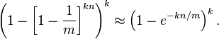
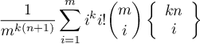

| How many hashes? (k): | |
| How many bits in the array? (m): | |
| How many elements in the set? (n): |
A Bloom filter is a probabilistic data structure that can be used to test whether an item is a member of a set (read more on Wikipedia).
For each item you'd like to "store" in the set, you apply k different hash functions to the item. Each of these k hashes should produce a number from 1 to m, which can be used as an index into a bit array of length m. Each of the k positions within the bit array are set to 1.
In order to test whether an item is a member of the set, the same k hash functions are used to generate array indices from this item. If any of these positions in the bit array is not set to 1, the item is definitely not part of the set. If all of the positions are set to 1, then the item may be part of the set with certain probability, but there is a chance that it may not be, because those indices might have been set to 1 as a result of some other items being added to the set. The Bloom filter therefore trades off the space required to store an entire set for exact set membership queries, for a small quantifiable likelihood of false positives.
This calculator uses the following formulae to calculate the probability that a query of a Bloom filter erroneously claims that an element is in the set. The formula on the left hand side is exact; the formula on the right is an approximation.
I have recently become aware that the above expression slightly underestimates the error rate in practice. This is because Bloom's original derivation for the expression assumes that each of the k hashes selects a distinct position in the bit array, an assumption which is not guaranteed in most implementations. That is to say, even if you have k indepedent hashes, you usually do not have the property that running them on a given output will produce k distinct array indices.
A recent computer-aided proof has shown that the correct expression for error rate in a bloom filter where hash outputs overlap is in fact:
In most cases, Bloom's original error rate expression is still useful for parameter tuning, as it is asymptotically consistent with the updated definition. Practical filters will have a bit array of vastly higher size than the number of hash functions used (that is, m >> k), making the probability of coincident indices negligible.